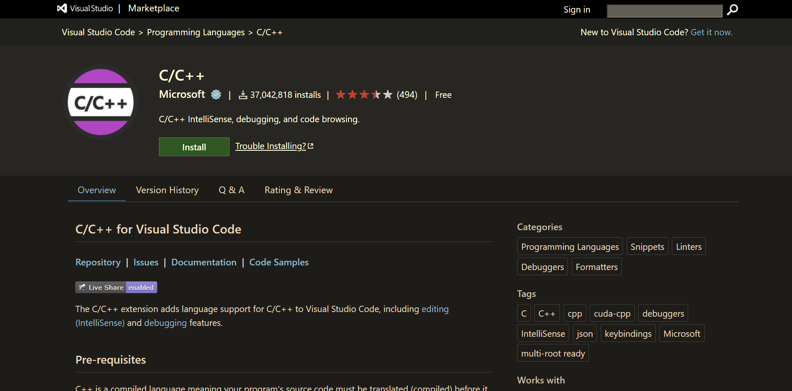
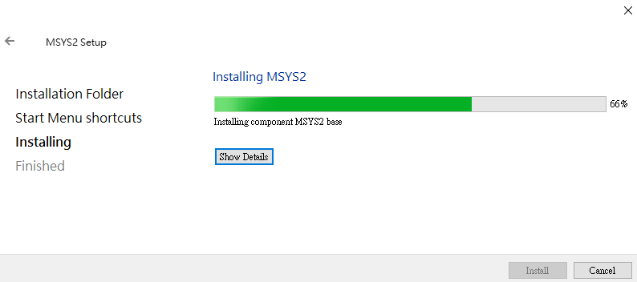
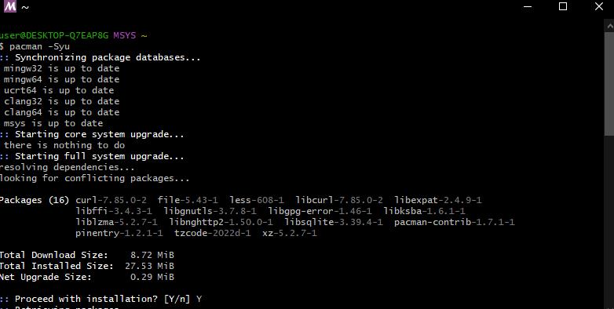
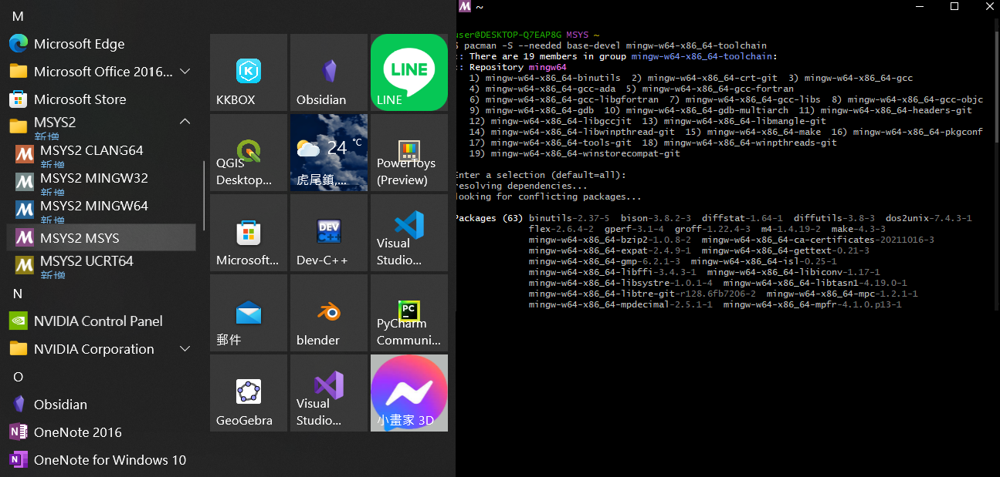
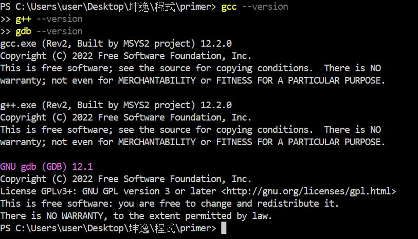
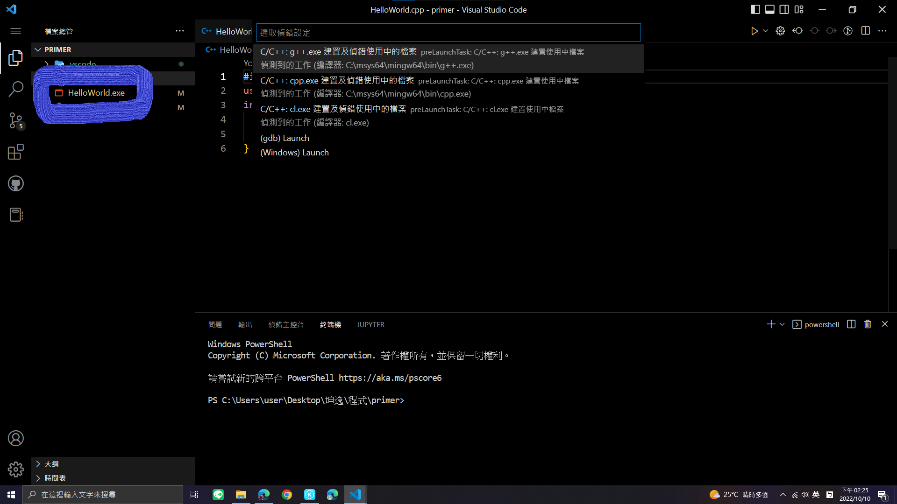

本回我採用vscode搭配msys2的組合來編寫C++(聽起來不是很專業啦)。
不過依照vscode的官方說明或許比較容易設置完成
，畢竟微軟的東西有時蠻有個性的😂
首先先新建一個資料夾，用vscode開啟後下載c++的延伸模組。
(按下延伸模組的按鍵，輸入c++，或是從
這裡下載)
(C/C++)
接著就是安裝編譯器的時間啦!首先到,msys2的官網下載安裝檔，
接著按照msys2官網安裝
(msys2安裝中)
安裝完後，請執行 pacman -Syu 指令，並且放心地給他Y下去，過程中，他會要求你先關閉程式，只要再重新啟動，再輸入相同的指令就好了。
(pacman -Syu)
接著，開啟MSYS2 MSYS，然後執行 pacman -S --needed base-devel mingw-w64-x86_64-toolchain 指令載入tooltrain
(msys & pacman -S --needed base-devel mingw-w64-x86_64-toolchain)
離運行第一段程式不遠了!首先，先開啟我們的vscode，在終端機中輸入 gcc --version 指令、 g++ --version 指令、 gdb --version 指令，如果沒有出現錯誤，那就是要編譯程式的時間了!
(g++ --version)
接著，寫一段c++程式後，按下ctrl + shift + B (執行組建工作)，在選取我們剛佈下的g++編譯器，你會看到資料夾中產生了一個.exe執行檔。
再輸入.\(檔名).exe 即可運行了!
(成功了_we_did_it.mp3)